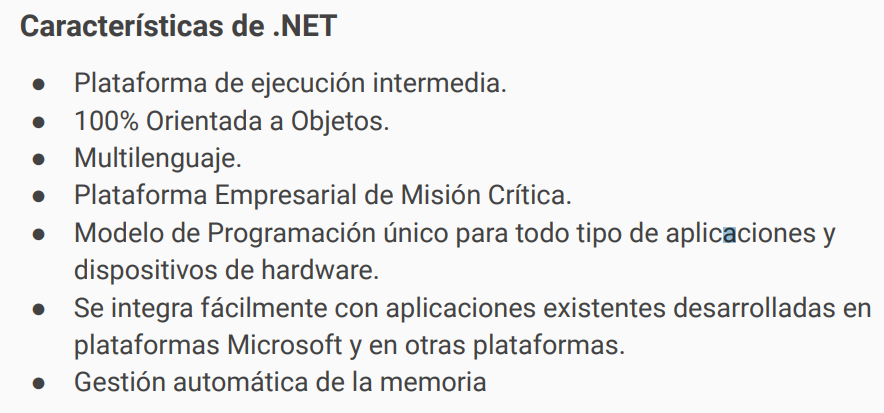
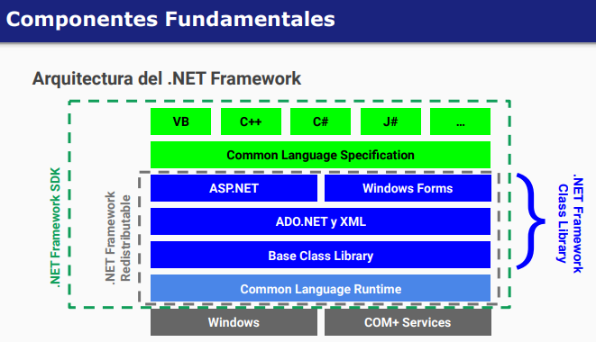
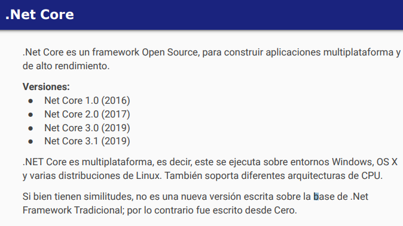
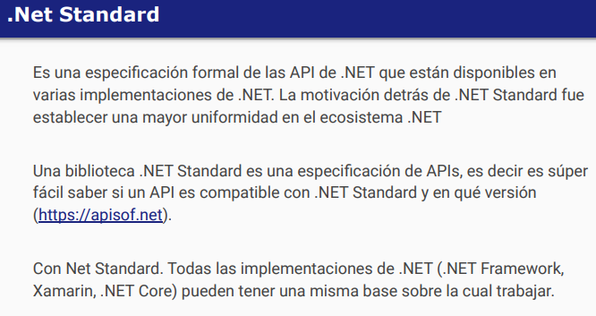
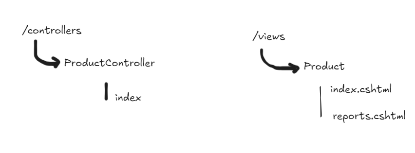
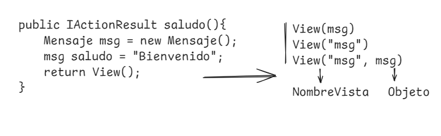

Primer parcial
Clase 1:
Introducción a C#
.NET Es una plataforma de desarrollo compuesta de un entorno de ejecución(Runtime); bibliotecas de funcionalidad(Class Library); Lenguajes de programación; compiladores; herramientas de desarrollo(IDE & Tools); y guías de arquitectura.
Caracteristicas
 .NET Framework
.NET Core
.NET X
Clase 2
Introducción a ASP.NET
MVC -> Controladores -> Peticiones HTTP
Middleware
CORS
MW - use, map, run
Scaffolding
Rutas
misitio.com/producto/reports/1-10-2008
Petición -> AController -> Controller -> Saludar()
Modelos de parcial
Modelos Segundo parcial
Un artículo en redes sociales afirma que usar un ORM podría perjudicar la performance de una aplicación por lo tanto NO recomienda su uso. Ud. está de acuerdo? Tiene algo de veracidad la afirmación? Justifique en todos los casos.
Asumiendo que existe una variable Contexto EF llamada “context” y que existe una entidad Cliente correctamente creada con EF, se quiere Modificar la razón social de un cliente existente (cuyo id es recibido por parámetro), utilizando el siguiente código, sin lograr el resultado esperado:
public ActionResult ModificarRazonSocialCliente(int id)
{
//Punto b) 🡪 De manera “ Modificacion Parcial ”
Cliente var cliente = new Cliente();
cliente.Id = id;
cliente.RazonSocial = "Cliente Modificado";
context.Cliente.Atach(cliente); //Para que le preste atención
context.Entity(cliente).Property(x=> x.RazonSocial).isModified=true;
context.SaveChanges();
return RedirectToAction(nameof(Index));
}
a)Describa que está sucediendo, es decir identifique y describa el/los problema/s
b)Corrija el código anterior para que finalmente cumpla el objetivo de modificación.
A partir del siguiente código:
public string LINQ()
{
//El origen del dato
int[] fibo = new int[] { 1, 2, 3, 5, 8, 13, 21, 34, 55 };
//La creacion de la consulta
var fiboOJO = fibo.Where(n => n >=8);
fibo[0] = 100; //Linea 3
string salida = "";
//Ejecucion
foreach (int num in fiboOJO)
{
salida += $"{num} - ";
}
return salida;
}
Identifique las partes o pasos de una consulta en LINQ.
LINQ tiene 3 pasos, buscar el origen del dato, consultar el dato (Creación de la consulta) y ejecutarlo
Indique cual es la salida del método y justifique en relación a la Línea 3.
Verdadero o falso EF. Justifique en los casos que sea falso:
Luego de recuperar un objeto del contexto de EF, el mismo tiene estado “recovered”, ya que está vinculado al contexto.
Una de las limitaciones de EF Core 5 es que NO existe forma de agregar validaciones DataAnnotations a las entidades.
En EF Core 5 es mandatorio/obligatorio usar el enfoque DataBaseFirst, debido a que ningún otro enfoque tiene soporte por Microsoft.
LazyLoading es el patrón o mecanismo que permite postergar la inicialización de objetos relacionados hasta el momento que son utilizados y se encuentra activo por defecto en Net 5 / EF Core 5.
Verdadero o falso Web Services y Sesión. Justifique en los casos que sea falso:
ASPNET Web API se basa en convenciones respecto al nombre de sus métodos y NO permite bindear parámetros complejos (clases)
Las variables de sesión en ASP.NET Core requieren habilitarse explícitamente ya que no están activas por defecto como en ASP.NET 4.x
Un cliente que invoca a un servicio ASPNET MVC Web api debe usar serialización XML.
ASPNET MVC Web Api NO mantiene el estado entre llamadas cliente y el servidor.